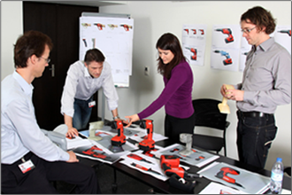

<style>
#ct_pane section {
	width:90%;
}
.colonnade {
	overflow:hidden;
}
.colonnade .lt_column,  .colonnade .rt_column {
	float: left;
}
.colonnade .lt_column {
	width:50%;
}
.colonnade .rt_column {
	width:48%;
	margin-left:2%
}
.colonnade.videos .rt_column h4 {
	margin-top: 0;
	font-size: 135%;
}
hr {height:1px;color:#eaeaea;}
#about_stories_section .colonnade { margin: 2em 0; }

</style>
<nav class="center">

<ul class="about_nav">
  <li id="about_welcome" class="selected"><a href="#" class="first">Welcome</a></li>
  <li id="about_who"><a href="#">Who We are</a></li>
  <li id="about_stories" class="last"><a href="#">Customer Stories</a></li>
</ul>
<button class="member">Become a Member</button>
</nav>
<section id="about_welcome_section">
  <article class="content">
    <h3 class="center">Welcome to UX Direct</h3>
    <p>UX Direct is an Oracle program which offers guidance to our customers and partners to design successful implementations and increase user adoption.</p>
    <div class="colonnade">
      <div class="lt_column">
        <p>UX Direct can help you to:</p>
        <ul>
          <li>Increase user adoption rates</li>
          <li>Reduce rework if customizations don't meet user needs</li>
          <li>Avoid introducing usability bugs in your implementations</li>
        </ul>
        <p>Use our easy-to-use toolkit to:</p>
        <ul>
          <li>Make User Experience integral to your implementations</li>
          <li>Make Usability a key requirement</li>
          <li>Apply our design best practices to customize solutions</li>
          <li>Evaluate the designs with your users</li>
        </ul>
      </div>
      <div class="rt_column"> 
        <p>For more information contact <a href="mailto:Madhuri.Kolhatkar@oracle.com">Madhuri.Kolhatkar@oracle.com</a></p>
      </div>
    </div>
  </article>
</section>
<section id="about_who_section">
  <article class="content">
    <h3 class="center">We are User Experience Professionals</h3>
    <p>We are user experience professionals at Oracle dedicated to provide usability consulting and expertise to make your implementations successful. </p>
    <div class="colonnade">
      <div class="lt_column">  </div>
      <div class="rt_column">
        <p>For more information contact <a href="mailto:Madhuri.Kolhatkar@oracle.com">Madhuri.Kolhatkar@oracle.com</a></p>
      </div>
    </div>
  </article>
</section>
<section id="about_stories_section">
  <article class="content">
    <h3 class="center">Watch our customer success stories</h3>
    <p>UX Direct is an Oracle program which offers guidance to our customers and partners to design successful <br>
      implementations and increase user adoption. UX Direct is an Oracle program which offers guidance to our customers and partners to design successful implementations and increase user adoption.</p>
    <div class="colonnade videos">
      <div class="lt_column"> <iframe width="350" height="220" src="http://www.youtube.com/embed/fqzMoiiwA1U" frameborder="0" allowfullscreen></iframe> </div>
      <div class="rt_column">
        <h4>UX in Implementation Cycle</h4>
        <p>Listen to Basheer Khan, CEO of Innowave Oracle's  business partners talking about the importance of introducing user experience in the implementation cycle. </p>
      </div>
    </div>
    <hr />
    <div class="colonnade videos">
      <div class="lt_column"> <iframe width="350" height="220" src="http://www.youtube.com/embed/rfGWrybtIgQ" frameborder="0" allowfullscreen></iframe> </div>
      <div class="rt_column">
        <h4>Helping Customers Go Beyond Functionality</h4>
        <p>Learn how Oracle Partners Innowave Technology is applying UX Direct knowledge and best practices to make their customer implementations successful.</p>
      </div>
    </div>
  </article>
</section>
